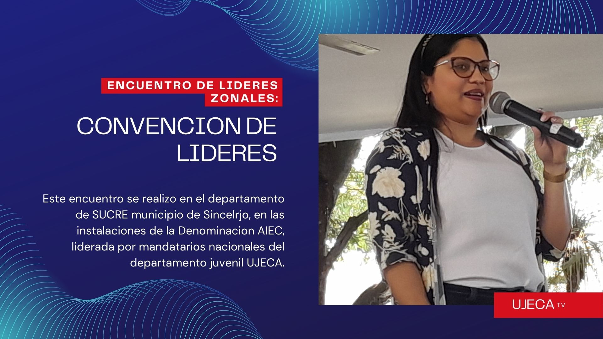

Esta Conformado por EL Presidente del Circuito 2 Zona 6 #UJECA
Desarrallo por el Tecnologo en ADSI Armando Álvarez
Presidente de Circuito, Embajadores del Reino del municipio de El Bagre Antioquia Lider juvenil enfocado en la ayuda a jovenes y adolecentes de nuestro municipio en busca de impartir la sana doctrina , la fe y el amor "Todo esto hacido gracias a Dios y su micericordia"
VicePresidente de Circuito, Embajadores del Reino del municipio de El Bagre Antioquia Gran ser humano y lider de la iglesia Bethel El Bagre Ant. Actualmente ba a cumplir ya 1 año de estar trabajando con este departamento. le agradesemos su ardua labor

Embajadores del Reino del municipio de El Bagre Antioquia Esta es una de las demas mujeres que conforman tambien este equipo de Trabajo, le Agradecemos a Dios por contar con lideres como ella que han marcado un hito en este departamento. Ya va Cumplir mas de un año de Trabajo!